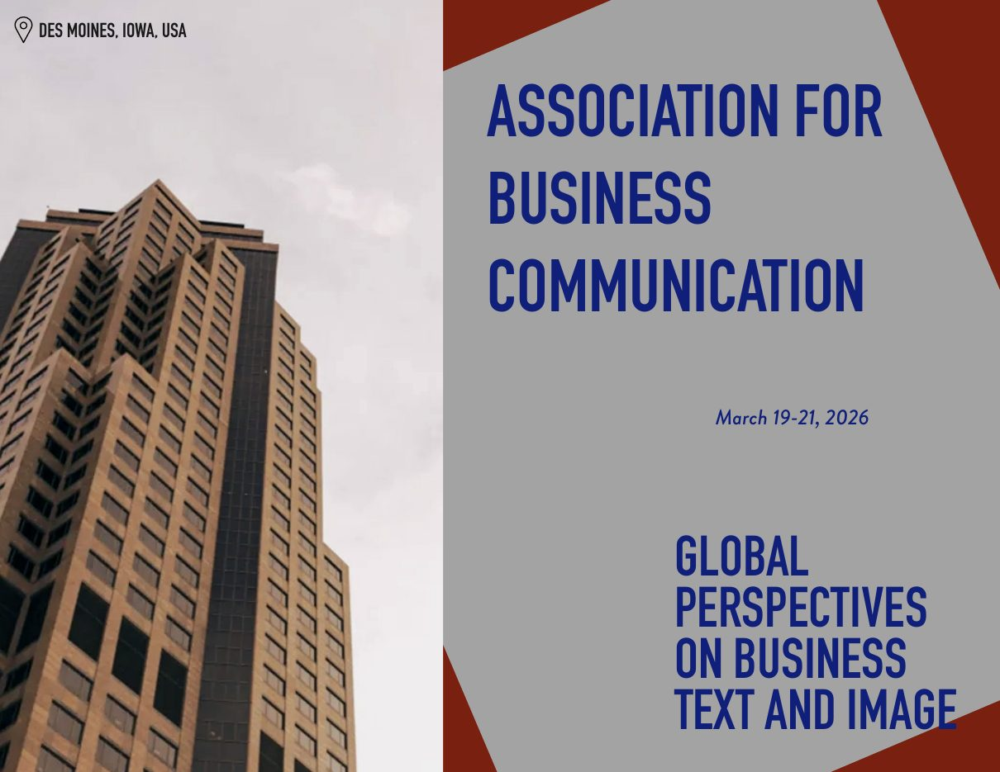
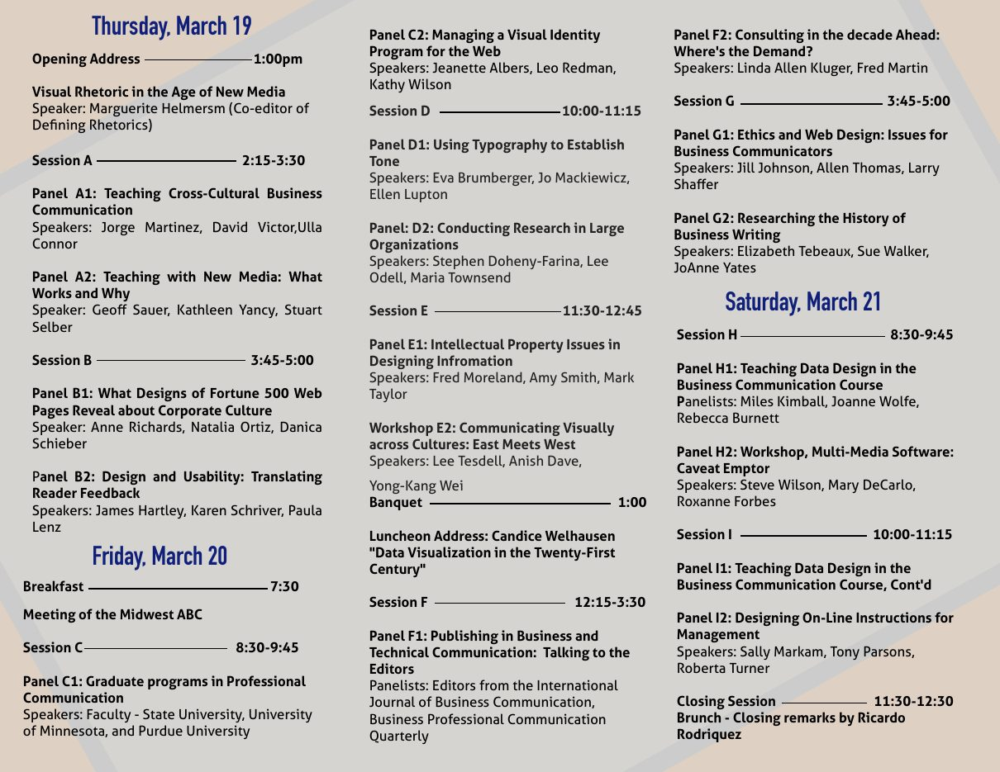
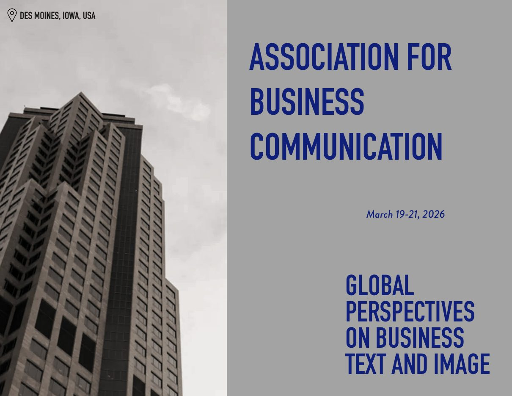
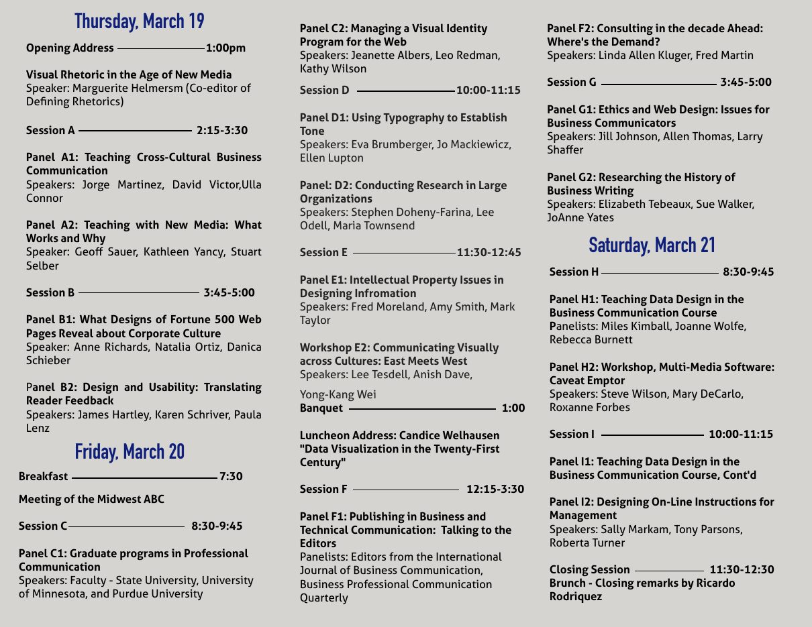

From plain text to a conference schedule
Turning a plain text document into a printed program for a three-day business communication conference, in two design versions.
- Context
- Graduate coursework, Iowa State, 2026
- My role
- Individual project: designed both versions from the plain text
- Starting point
- A plain text file of sessions, panels and speakers
- Deliverables
- Two versions of a two-page program
The brief
I was given the full schedule for an Association for Business Communication conference as unformatted text: three days of sessions, panels, workshops, meals and speakers. The task was to design it so attendees can find what's on and when, quickly.
Design approach
- Days as landmarks. Each day is a large colored heading, so attendees can jump straight to it.
- Times on a leader line. Session names sit on the left with times aligned on the right, joined by a rule, like a menu.
- Clear hierarchy inside each session. Bold panel titles, regular-weight speaker names.
- A cover that sets the place. A Des Moines skyline photo and a strong condensed title.
Version 1 adds a red accent and a lighter page tone; version 2 is a quieter gray treatment.







